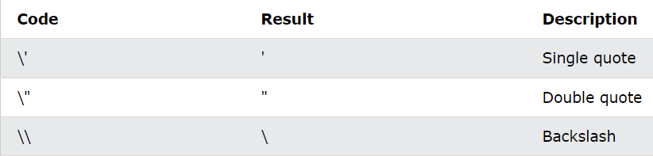
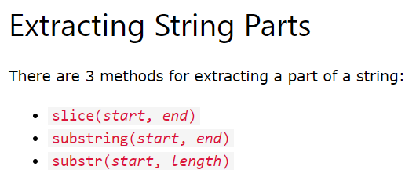
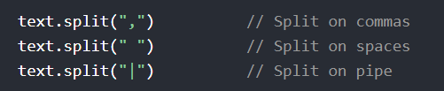
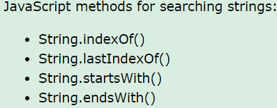

1. JavaScript Function
Note : Single function using javascript
Output(Meth) :
Note : Without js calling function and self running FILE
1. Objects
Topic covered : Events
Note : Topic covered : length,
1. length, slice, substring, substr
Examples
1. Slice
You cal also use positive and negative value
Total Slice :
2. Substring
You cal also use only positive value. Substring can not accept Negative Value (same as slice)
3. substr
Note : start and length (Length from starting point) only
Substr value :
4. Replace
This para will be change after click below button
This Line is sensitive and Click below To Insensitive
NOTE
5. Property Access
The Property Access is only access the value but can't chanage the value
value : Tamizha
Executed value :
6. Split
1. Search of methods
NOTE : Both indexOf(), and lastIndexOf() return -1 if the text is not found
1. The indexOf() method accepts a second parameter as the starting position for the search:
Return :
2. Search
Note : string.search() is also indexOf method but Without parameters and return value will be in nunbers
3. Match
Note : string.match() is also search option with global and insensitive option and Important : How many match will be list return value
Return Value :
Return Value :
4. Includes
Note : Includes also use parameter and Result will be true or false only
Return Value :
5. Startswith anfd endswith
Startswith and endswith and also use parameter and its work for only true or false and its Like Includes
1. ` Used
See js file tp understand !
Return Value :
2. tofixed()
Its used for decimal after the value assign
Return Value :